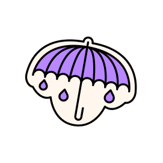

ABOUT FRAZZLED
Sessions
Contact US
need help now?
volunteer WITH US
PARTNER with us
SUPPORT US
About Frazzled

Our story
The inspiration for Frazzled came from founder and patron Ruby
Wax’s experiences during her best-selling book and theatre tours.
Ruby met thousands of people looking to connect and share their
stories, and when she asked her audience members if they wanted a
chance to talk about what was going on for them, they always
did. Ruby sensed the need for a place where people could come
together and connect with others in a safe, supportive space. A
place where people could talk about the overwhelming stresses of
modern life, free from judgement. This is what motivated her to
create Frazzled in 2017, and today, this free service is available
to anyone 365 days a year.
“Feeling heard, to me, has always been half the cure”
Ruby Wax OBE
FRAZZLED FOUNDER

Our vision
‘1 in 4 of us have a mental illness, but 4 in 4 of us are frazzled.’
The definition of frazzled is to be stressed about stress - not worrying about overload or over-work but the pressure of trying to keep up with those we think are handling everything perfectly. The reality is, people don’t admit how hard life can be, so we don’t share how we really feel and let the frazzle build up until we eventually burn out.
The definition of frazzled is to be stressed about stress - not worrying about overload or over-work but the pressure of trying to keep up with those we think are handling everything perfectly. The reality is, people don’t admit how hard life can be, so we don’t share how we really feel and let the frazzle build up until we eventually burn out.
Why are we more likely to moan about the weather than the storm that’s
happening inside our heads?
Community has always been an important release, but there are less
spaces in today’s world to share the burden of living. Even back in the
Savannah after a hard day’s hunt everyone sat around the fire, knowing
they had each other’s backs. While we can’t offer a fire, we can offer a
space to feel safe to let it out.Frazzled is a community based on the
power of emotional openness and vulnerability. A space where anyone can
come and be listened to, or simply listen, without judgment or
solutions. The simple act of opening up has the power to help not just
the person sharing, but those they share with. This is a place for them
to simply exhale and feel less alone in their feelings.Since 2017,
we’ve provided a space where people feel heard and held, and we’ve
challenged what connection looks like in a modern world that demands so
much of us emotionally. We think of Frazzled as a human safety net,
where we can catch people before they fall.
To us, feeling heard is half the cure.
To us, feeling heard is half the cure.
MORE ABOUT OUR SESSIONS